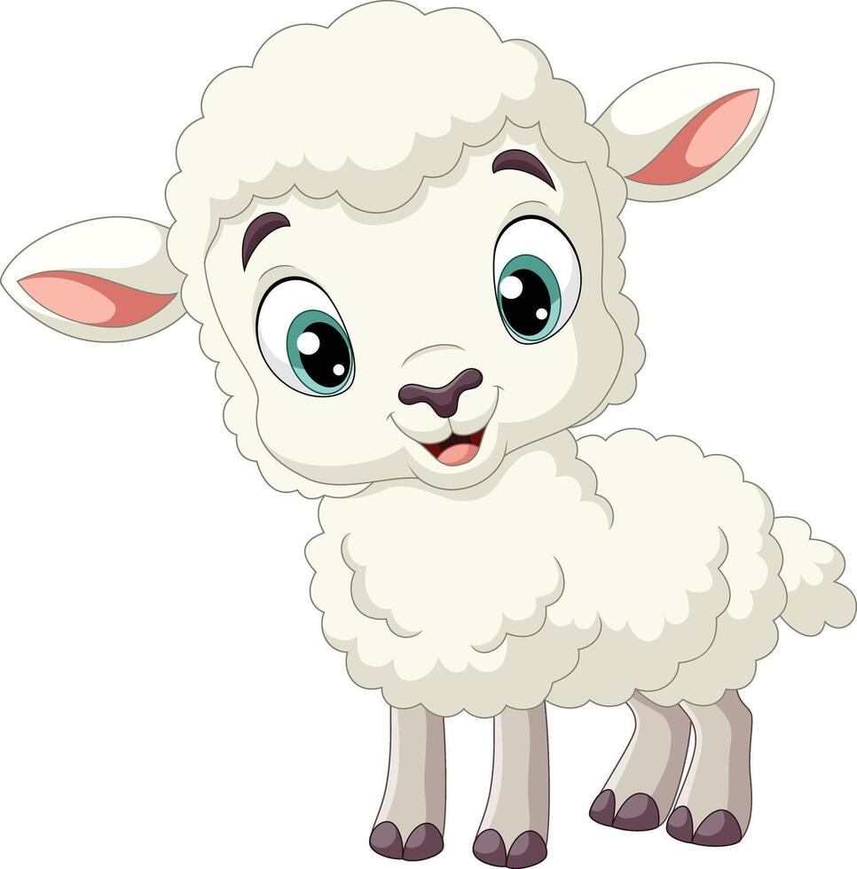
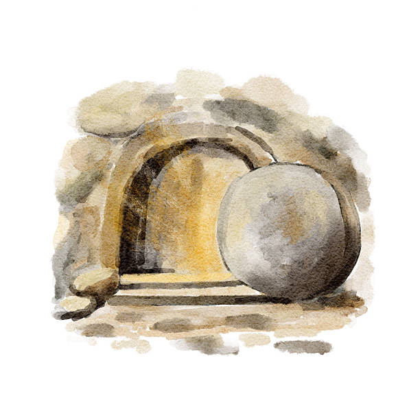

Uma jornada de entrega e o maior amor do mundo...
Jesus não estava ali por obrigação, mas por um amor que não cabe em palavras. Ele trocou Sua glória por nossas dores, provando que o Seu maior desejo era nos resgatar.

Ele carregou a cruz e, com ela, cada um de nossos fardos. O que era para ser nosso, Ele tomou para Si, silenciando o medo com a força do Seu perdão absoluto.
Parecia o fim. O mundo perdeu o brilho por um instante, mas o que parecia uma derrota era apenas o intervalo para o maior milagre de todos. A dívida estava paga.

A morte não pôde detê-lo! Ele ressuscitou e hoje vive entre nós. Este Leão que te dou é para simbolizar essa ressurreição: Ele não é mais o cordeiro sacrificado, mas o Rei que cuida de você. Que ao abraçar este presente, você sinta a presença real dele ao seu lado.
Fiz este site e escolhi este Leão para te lembrar que você é profundamente amado(a). Que a alegria de saber que Ele vive preencha o seu coração hoje e sempre!
Com todo o meu carinho.